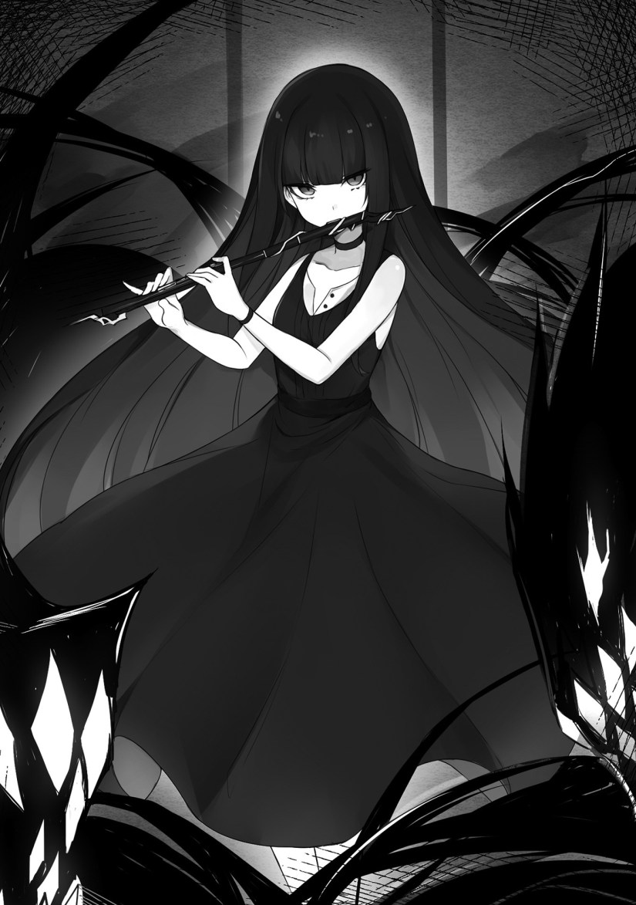

Luxon gave me a report as I was changing clothes in order to get on Schwert, the air bike.
The contents of the report made me squint my eyes.
“We have traitors?”
[Indeed. After investigating, it seems that two girls, Anjelica’s followers, alerted the principality of our whereabouts.]
Anjie’s followers betrayed her at such a time?
“Really? They’re idiots for making themselves enemies of a duke household.”
[Currently, the duke household’s position has weakened due to Julian’s downfall. It would be strange if traitors didn’t show up.]
“Is this a political thing? I’m not interested.”
Once I finished changing clothes, I carried the shotgun in one hand and a helmet in the other.
[Are you going to leave the matter alone?]
“Show me the way. Before I rescue Anjie, I’ll pull the reins in on them.”
[You should speak to the sailors. You could ask about using the jail they tossed you in, Master.]
I presumed that things would get troublesome if I rescued Anjie while the traitors were still out there.
“I understand.”
◇
I stood before the jail cell that I had been tossed into before.
Inside were two girls.
Their exclusive servants were tossed into a separate jail cell.
“Wait! This is a misunderstanding!”
“Help them!”
The ones who asked for someone to help the two were followers from the same group as them.
However, they were cautious about the sailors surrounding them with their hands over their weapons.
A boy follower addressed me.
“H, hey, is this a joke? I mean, these two have been Milady’s playmates since childhood. It’s a bit much to think that they would betray her.”
I threw aside a cylindrical tool in my hand.
When they saw it, the girls lost their composure.
“We’ve thoroughly examined their rooms.”
I glared at the girls inside the jail cell.
“Pervert!”
“I have no interest in you two! Besides, female sailors were the ones investigating the rooms.”
I turned around to see that there were women in uniform watching me. They were members of the cabin crew who took care of the students from the academy.
“Many of the same kinds of items were in there. There also seemed to be instructions, so there’s no reason to believe that they didn’t know what they were doing.”
The girls in the cell glared at one of the woman.
“All of you, remember this. We absolutely will not forgive you!”
The crew members became scared.
I kicked the iron bars, threatening the girls.
“Close that mouth. Do you want your head blown off here?”
The two were frightened. However, the boy followers grabbed my shoulder.
“You’re going too far! Even if these two people are traitors, you need to properly investigate the──h, hey, wait!”
I pointed the shotgun at the boy and then spoke.
“Do you guys not know your position? It’s because of things like this that you’ve strayed from Anjie. Listen, there was a traitor among you. Do you understand what that means?”
As expected, the followers realized the unpleasant situation they were in.
I bashed the boy with the gunstock of the shotgun, causing him to fall to his knees.
“Fight with the will to die. It doesn’t matter whether you’re a woman or a man. You must fight to prove your innocence. Otherwise──”
I stared at the two girls inside the jail cell.
“You wouldn’t want to be dealt with in a similar manner as these two, right?”
Anjie’s papa wouldn’t forgive traitors.
Seeming to understand the situation more than I do, the followers violently nodded their heads.
After I entrusted them to the sailors, I headed towards the storehouse containing Schwert.
I muttered along the way.
“Would people betray others, even when they’ve been together since childhood? I’m really not taking a liking to politics. At the very least though, I have to save her.”
I wasn’t interested in the situation within the royal palace, but I had compassion for Anjie. Anjie sacrificing herself with the intent to protect these people──was something I didn’t like.
◇
I was in the airship’s hangar.
An inner suit meant for wearing armor had been prepared for riding the air bike. I put on the helmet, a vest for my chest, thick cargo pants, and boots.
Inside the helmet, I could see an image of the surroundings from a camera installed inside the air bike.
[It’s time to move, Schwert.]
Luxon built a spot for itself inside the air bike.
I mounted the air bike, gripped the handles, and revved the engine.
The violent vibrations of the engine echoed within the hangar,
The wind seeping into the hangar was annoying. A sailor spoke to me in a loud voice.
“Are you really doing this?!”
“Of course. I’ll tear off the moustache from that low-life messenger as a souvenir.”
I would perform some hair removal service on the moustache that guy was so prideful of.
“That’s what I want to hear! Ah, I don’t really need the moustache, though.”
I gave thumbs up to the likeable sailor, lowered my posture, and departed.
The air bike soared into the sky, traveling through the air as if it was surfing across waves of water.
As I held up the shotgun on my back with one hand, I aimed it at the monsters gathering together.
“All set?”
[Whenever you’re ready.]
While readying the shotgun with both hands, Luxon began piloting the air bike.
“Small fries make the best opponent for this.”
When a magic circle appeared in front of the muzzle, numerous tinier magic circles formed around it. They locked on to the approaching monsters in front of me.
[Electric attribute, buckshot formula, lightning──and we’re set.]
“Disappear!”
As I pulled the trigger, shotgun shells flew out and through the magic circles. Then, while the tiny shots were flying──magic light was released, changed to a blue or yellow color, proceeding to shift directions.
Even when the monsters tried to avoid the bullets, the light chased after them.
The magic spread like fireworks and was most optimal for ranged attacks.
The problem was that it was difficult to handle such advanced magic.
I laughed in a loud voice when one shot killed dozens of monsters.
“You see that?! That’s the power of Luxon and me! When we join forces, we can use magic like this. I only knew of this recently, though!”
And what if I was alone? Nope, not a chance. It took time to activate, and it was tough to lock on to moving enemies.
“Well, the ratio of our contributions is split seventy to thirty, though.”
[Why are you speaking as if you’re the one holding that seventy percent? If we’re talking about ratios, then I’m doing seventy percent of the work, and you’re doing thirty.]
“You’re getting in the way of my joy. Look, the next ones are coming.”
[──You really are a piece of trash.]
As I readied the shotgun, aimed, and pulled the trigger once more, the monsters before me vanished in large numbers again.
◇
While inside a unit of armor, Chris was watching Leon rush out.
“Is he really taking the vanguard?”
The luxury liner accelerated, as if pursuing Leon.
They were aiming after the flagship──the back of the giant monster, which held the princess and Anjie.
Seeing Leon’s figure, Chris tightly grasped the control sticks of the armor.
“Baltfault, you’re strong.”
Even though he was stronger in terms of swordsmanship, Chris felt like he lost in face of the current Leon.
Leon was superior in magic, bravery, and everything else.
Even if everyone admired a feat like charging forward alone, not many could do it.
Leon made it look easy.
Chris didn’t have the courage to perform something like that while riding an air bike.
“Is it possible for me to become like you, Baltfault?”
The charm around his neck shook.
Chris looked at the students and the airship’s bodyguards, who had gotten into armor.
“Our purpose is to protect the airship. We will definitely defend it!”
He heard the responding cries of his colleagues, and as he closed the chest of his own armor, six units of armor began to boot up and come alive. Departing, Chris killed a monster rushing towards the airship.
His swordsmanship was very clean.
As he pushed his way through the monsters, cutting them all down, they went up into smoke, disappearing.
Seeing that, students who came out to the deck raised voices of cheers.
Chris descended along the side of the airship, cutting up the monsters.
“We’ve made a promise with Baltfault. We will not let this ship fall!”
◇
The principality had a flagship.
Inside such a warship, an alarm rang.
Hertrude’s long, black, and tidy hair rustled as she got up. She wore a black dress, and as she approached a window, she was interrupted by a lady attendant.
“Your Highness, you mustn’t.”
“Step aside. I want to see it with my own eyes.”
Since it seemed that Anjie, still surrounded by knights, was worried as well, Hertrude called out to her.
“Anjelica, you come here too. It seems that your school friends have chosen an honorable death. You will see their final moments with your own eyes.”
Hertrude looked away from Anjie, who was glaring at her, and focused on what was outside.
However, when looking outside, the scene contradicted what Hertrude had imagined.
“Wha?!”
The luxury liner was attempting to lead an attack itself.
Hertrude shouted towards the attendant.
“The magic flute, quickly!”
Meanwhile, Anjie was watching the person pushing through on an air bike in front of the luxury liner.
“That idiot! That complete idiot! Why──why didn’t he run away? If he had that much power, he could have escaped.”
Tears flooded Anjie’s eyes after seeing Leon’s figure.
Once the attendant retrieved the magic flute, Hertrude placed her mouth against it.

As a very strange tone reverberated, the monsters simultaneously moved in unison.
In front of such a sight, Anjie seemed convinced of the cocky attitude the principality took.
“So that’s the trump card of the principality.”
Hertrude took her mouth off of the magic flute.
“That’s right. With this, the difference in numbers has been overturned. The kingdom will fall.”
She declared as such, but the monsters charging towards the luxury liner disappeared successively.
The students aboard were desperately resisting.
They deployed a shield, and also fought back by firing magic.
Hertrude and Garrett had looked down on them, but the kingdom’s knights, the boys, were strong.
Why was that so?
They challenged dungeons for the sake of marriage, and their earnings were to support the girls. They advanced deeper and deeper in order to become strong adventurers upon graduation.
It was the result of working their hardest, shedding blood, sweat, and tears in order to grab the attention of girls.
Anjie cried as she watched Leon dash across the battlefield.
Hertrude bit her lip in front of the luxury liner──and the students frantically resisting.
“It will only get painful if you resist.”
Anjie wiped her tears and spoke to Hertrude.
“Wrong. The nobles of the kingdom don’t give up. Just as you wanted, they came to show their stubbornness. I didn’t mention his name back then, but the one in the lead is Leon Fou Baltfault. A distinguished knight even in the kingdom!”
“Baltfault?”
Garret approached the two while stroking his moustache.
“It is indeed a bad thing to give up. However, this ends here.”
As Garrett said that, the principality’s fleet arranged itself to surround the airship. They arranged in a figure eight so that their allies wouldn’t come under their fire. (TLN: Referring to the Japanese character for eight, which is 八)
Monsters surrounded the airship and cannons were pointed at Leon.
Hertrude glared at Garrett.
“How underhanded.”
“It’s all for the sake of victory, your Highness. Besides, we can obtain as many monsters as we want.”
As Garrett made an ominous smile, the monsters rushed towards the luxury liner and hundreds of cannons fired at Leon.
Anjie shrieked against the monster-involved bombarding.
“Leon! Livia!”
Anjie was pinned down by the knights, watching the luxury liner get covered up in black smoke as a large explosion erupted.
Chapter Thanks First :v
I swear this guy comments 1st b4 reading. Be fair man.
Still better than bot who claim it first.
Thanks for the chap!!!!
I agree with you.
Well, at least he really “did”.(Become first to comment)
I agree with you
“We we definitely defend it!” replace the second “we” with “will”
Thanks for catching that
Thanks for the chap!!!!
That Hertude looks cool.
Thanks for the chapter!
she looks like Stocking from panty and stocking
Thanks for the chapter
Thank you so much for the translation.
Wohoo leon leading the charge is so cool, hopefully he trigger more flag with anjie and livia, but of course luxon is still the best girl(?)
Thank for the chapter!!
Things are finally picking up after his sulk-session. About time!
I tried so hard, but can’t get first!!!????
Skip reading.
Why worry when you have science, magic and modern knowledge? And robot and mob character? Grab a 4D glasses and some popcorn and watch war of machine vs monsters.
Will leon say these lines “i’ll be taking back what’s belongs to me. Despair in the depts of hell.” Something like that? Cuz thats too chuunish. Kekekke
Thanks for the chaps.
Hell has departments? 😛
Ohh…forgot ti put H. Cuz H is too busy.
Thx for the chapter
Why good chapter always fells so short
Thank you for releasing new chapters so often!
“They arranged in a figure eight”
What do you think about adding comment, that this is japanese 8 eight (八), so it would me more clear to readers? Because I’m trying to imagine for few minutes: “How is it possible to use a formation that looks like 8?”
Sure thing.
In English it would be called a chevron formation
His promotion after this is a guarantee
Welp, thanks 2 pointboutbthe obiviousness.
:v
Leon really IS afraid of Anjie’s papa.
Thx 4 da chap.
This is getting better and better ^^
Thanks for all your hard work ^^
Thanks for the chapter.
Yeah, never underestimate Leon.
Thx for the chap, Leon truly is a master at playing the bad guy, he learned a lot from hachiman, and, he is becoming the counterpart of bakarina, while wanting to return the game to normal, he has captured the girls and is starting to get the boys, really, we should call him Stupeon or Bakaon or something like that to make it official
Those just sound like pokemon.
Yea that kinda like evolution of eevee
Thanks for the chapter
I guess Leon will be troubled after this achievement
Thanks~
Thanks
More promotion again for Leon
Hertrude looks like a jap. Evil spirit?? She looks like yuuko in dusk maiden..?
Btw. “We we definitely defend it!” -> “we will definitely defend it!”
Thanks for the chap ^^
A loli yuuko
Thanks for spotting that
Daym i lyk the princess more than the heroines, she might have that Yandere tendency so having her as Leon’s waifu has my 100% approval!!
DFC DFC DFC!!
Edit: I’m imagining her playing Leon’s flute *cough*
but what a sad, Leon like konyuu!
ehem.. i mean big chest????
more like, he like milf, the only one that he try to flirt with and the only time he got awkward to interact are always milf
holding for 3day without reading really hard man! but really satisfied when you can read complete 1chapter. .
thanks for the chapter ????
Finally new Loli black hair (~,~)
Thank you for the chapter
Thanks for the chapter!!
you are awesome, this is one of the novels im currently reading, and i like a lot that you keep going translating so fast in comparation with the others translators!!! you have my tanks!!! if you open patron or something garantee money!
They’re dead. Thanks for the chap!
Give this guy another promotion.
…what he claim it’s Chris that do everything?
What a noble hearts. Give him more promotion.
Leon : *autisctic screeching*
Nail biting stuff
Meatbun Delivery~
Thank you for the chapter ( ●w●)
What happens with livia?
+1 harem? Thankies
Oh oh oh… thanks for the chapter desuwa~!
“You really are a piece of trash” what a blunt way to say it Luxon hahah
I sometimes think Luxon is really a female person before transferring its mind and turning into an AI.
i personally feel really hard to see Luxon as a female, it has the hobby of customizing vehicle, and take a damn pride of it (ex: Schwert and Partner) and, latter on when more AI introduced to the story, they always refer it as Twisted guy
man, Hertrude are Marie level flat, those two definitely can get along well with each other, imagine her and Marie buzzing around annoy the hell out of Leon, the guy really gonna get “BaldFast” haha
Thanks for the chapter. Nightly routine before I sleep is that I usually read a chp lol
As the black smoke clears up, spaceship reveals itself, and an armor bigger than most is charging straight to the flagship.
????????
Thanks alot for the chapter
Your getting quite fast now and I’m loving it
Im still waiting for partner arrival… Its imposible that it wont appear in this situation
Mm…i forgot
Thanks for the chapter
Testing… For some reason whenever i replying comment, it always appear as new comment… Did other phone user experiencing same problem as mine?
Anybody know why?
Ah it works… Nvm then
Thanks for the chapter.
Sorry that there isn’t much audience for RPG maker here.
Oh damn cliff hanger, mr/s TL help i can get down from this cliff hanger
thanks for chapter…
Thanks for the chapter!!!
(シ_ _)シ
Thx FOr ChapTER!!!
THINGS ARE GETTING GOOD OOH BOI. Thanks for the chapter!
Thanks for the chapter!
Hmmm… Seems things become more interesting here and where the hell is Deirdre? I think she will become one of Leon’s harem… I mean in the harem must have princess-like heroine who said “ara ara”, “-desuwa”, or laugh with ” ho ho ho” right?
but she has to be decent like a normal person(not the I take ya money without repercussions and cheat on you publicly)
Thanks for the chapitre
While inside armor, Chris was watching Leon rush out. It should be “While inside the armor,Chris was watching Leon rush out”
anyway thx for the chapter BTW the volume 3 will be released at March *dunno wat date*
He didn’t do it CJ style but terminator style
Feels like leon is digging his grave in terms of promotions.
Also Thanks for the chapter~
Woohoo, thanks for the chapter! you’re rock! this week is awesome!
Thanks for the translation!
Btw, is princess really called Hertrude? If it’s one of those letter issues like mixing l and r translating Japanese to English it should be Gertrude.
Thanks for the chapter! I’m gonna smash that flute myself >:3
Thanks for the chapter! 🙂
Welp… just some cannons couldn’t hurt something that is protected by a robot from an advanced society…
This should be easy if he had made an example of those ex- followers… but that’s the charm of it.. those people are cowards that don’t even need that..
Author forgot to mention that part of the reason the students are so skilled at fighting monsters is due to frantic dungeon crawling to earn back the money they lost when they bet against Leon in the duel. Especially the ones who bet all they had and/or borrowed money to increase their bets. After all, being students they didn’t realize should never gamble money can’t afford to lose as the odds are always in the house’s favor and more likely to lose a bet than win.
Is Luxon going to arrive? I really want to see the real spaceship fight.